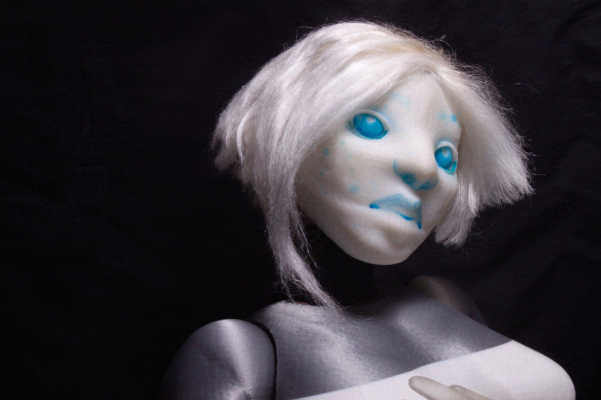
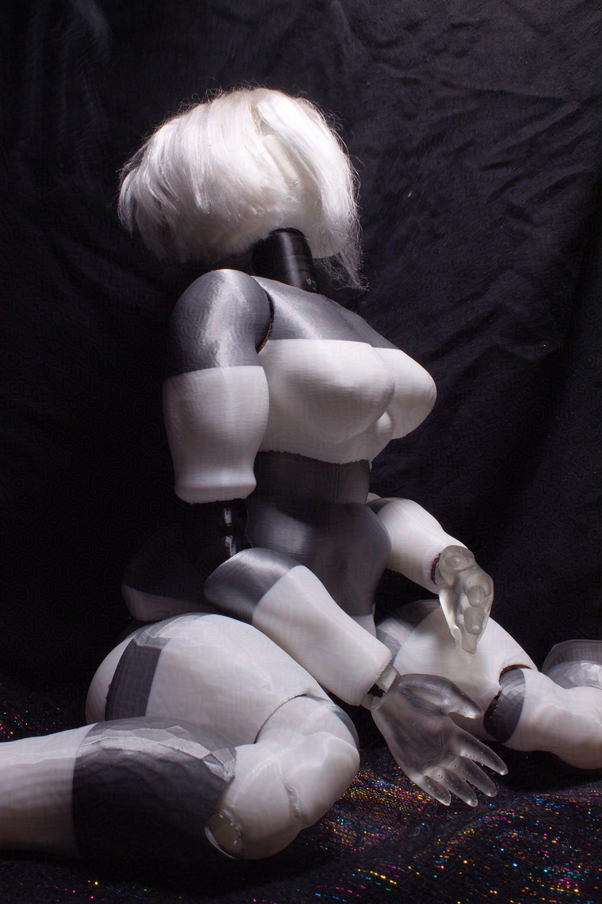

Human Behavior
A series of 1:4 Fashion Dolls.
Origa the Android.
Initiated from a need to fabricate easy to modify, articulate, and customize puppets suitable for stop motion, the bodice design is based on ball jointed dolls. The dolls need to be lightweight, repairable, and easily modifiable after printing. Recognizing that BJDs are more of an artistic doll than one meant to be played by small children, I have conducted extensive research from indie, professional, and conceptual sources, ranging from alterations of mass produced dolls to Hans Bellmer.
As I do not have access to 3D printing technology outside of my technician role from my alma matter, it is necessary to prototype and troubleshoot my design for when I can sustain my own fabrication workspace.
CAD Topology. Base modeled in Rhino.
Even though this started with a need I had for my stop motion projects and ended with it being part of a fashion collective, I am delighted this passion project affirmed my interest in digital fabrication.
Initial funding for Human Behavior has been generously sustained by the AACE Lab Fashion Grant, supporting student research that intersects the disciplines of art, architecture, or engineering with an interest in fashion. Reception of this grant aims to encourage work in digital fabrication and fashion design that may not be focused on in coursework. My typical coursework does not accomodate fashion design or mechanical design. My only experience with rapid prototyping comes from self motivated projects like this. Heads, eyes, feet, and hands printed in FormLabs 3 Resin Printer. Bodice printed in PLA with BambuLabs Carbon X-1. Final iteration of Human Behavior aims to be made from ceramic materials. 3D printing materials accessible to hobbyists or small organizations are not sustainable in the long run. While PLA is recycleable, I would want to make the majority of the dolls in this series out of biocompatible materials.
Base modeled in Rhino. Aesthetic detailing sculped in Blender. The dolls primarily have two designs, one with a wider upper body, and the other with a wider lower body. The joint at the abdomen, along with the joints at the limbs, are the same size throughout both designs. This is to make the figures customzable and to accomodate a wide variety of physiques. The dolls also come at different scales. Origa is tall at a head to body ratio of 1 to 1.15. The smallest dolls come at a head to body ratio of 1 to .85.